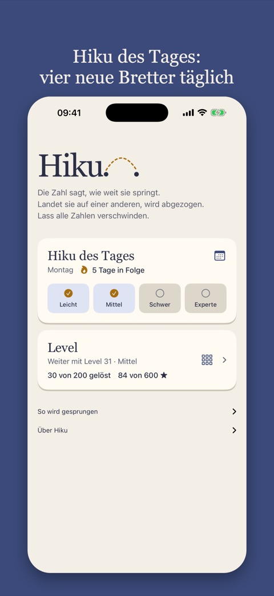
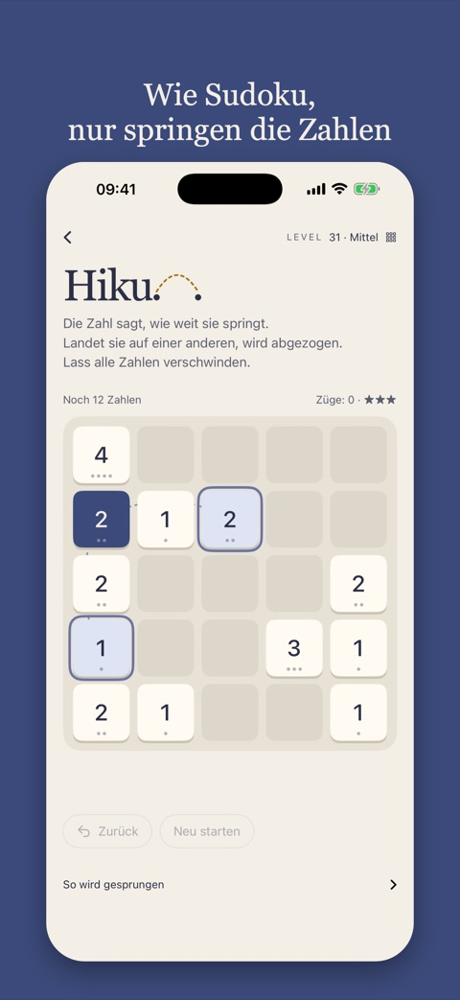
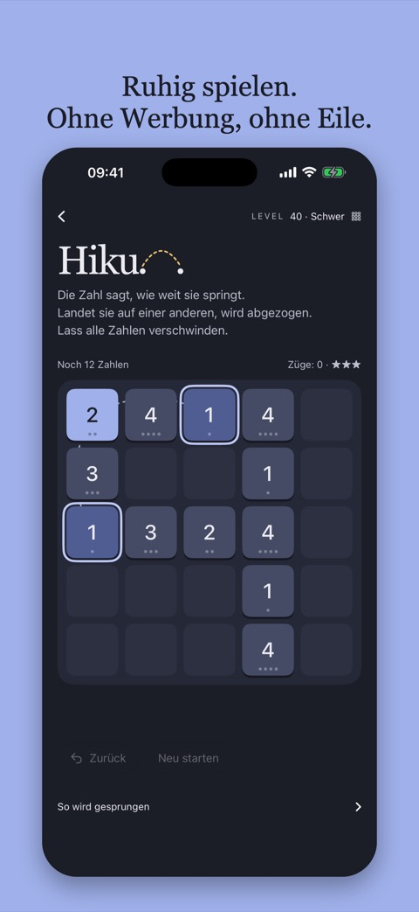

Hiku ist ein ruhiges Zahlenrätsel für alle, die Sudoku mögen: reine Logik, kein Raten.
Die Zahl sagt, wie weit sie springt. Landet sie auf einer anderen, wird abgezogen. Lass alle Zahlen verschwinden.
Dieselben vier Bretter für alle, jeden Tag. Neue um Mitternacht.
Du magst Sudoku? Hiku ist reine Logik mit einer Regel: Die Zahl sagt, wie weit sie springt. Vier neue Bretter jeden Tag, von leicht bis Experte.
Die App hat 50 Level zusätzlich zu Hiku des Tages, und die ersten zeigen dir die Kniffe einen nach dem anderen.



Eine Zahl springt so viele Felder weit, wie sie sagt, waagerecht oder senkrecht. Eine 1 erreicht ihren Nachbarn, eine 3 das Feld drei weiter. Sie springt über alles dazwischen, muss aber auf einer anderen Zahl landen.
Die kleinere Zahl wird von der größeren abgezogen, und der Rest bleibt, wo du gelandet bist. Gleiche Zahlen verschwinden beide. Wird eine Zahl kleiner, wird ihr Sprung kürzer.
Jedes Level ist lösbar. Die falsche Reihenfolge kann Zahlen übrig lassen, die sich nicht mehr erreichen. Nimm Züge beliebig zurück und probier einen anderen Weg.
Löst du ein Level, ohne einen Zug zurückzunehmen, bekommst du drei Sterne. Mit ein oder zwei zurückgenommenen Zügen gibt es zwei, sonst einen. Neu starten zählt wie ein zurückgenommener Zug.
Hiku des Tages lässt sich kostenlos mit zwei Zeilen Code in eine Nachrichtenseite oder Website einbinden. Keine Cookies, kein Tracking, und das Spiel spricht sechs Sprachen.
Warum lassen sich manche Bretter nicht lösen, und wie weit muss man auf einem Expertenbrett vorausdenken? Der Artikel zeigt, dass die Parität der Summe erhalten bleibt, dass ein Brett in Gruppen zerfällt, die sich nie wieder treffen, und dass sich die Zahlen jeder Gruppe in zwei Haufen mit gleicher Summe teilen lassen müssen. Ob das Spiel NP-vollständig ist, ist noch offen.
Hiku erhebt keine personenbezogenen Daten. Die App hat kein Konto und keine Werbung und verfolgt dich nicht über Apps oder Websites hinweg.
Welche Level du gelöst hast, deine Sterne und Hiku des Tages werden nur auf deinem Telefon gespeichert. Das Widget liest dieselben Daten dort. Alles wird gelöscht, wenn du die App löschst.
Ab Version 1.2 sendet die App einige anonyme Meilensteine, damit wir sehen, wie weit Spieler kommen: wenn du 1, 9, 10, 20, 30, 40 oder 50 Level gelöst hast (und 100, 150 und 200), wenn du ein Brett von Hiku des Tages löst und auf welchem Level, und wenn deine Serie bei Hiku des Tages 3, 7, 14, 30 Tage oder mehr erreicht. Sie gehen an TelemetryDeck, einen europäischen, auf Datenschutz ausgelegten Analysedienst. Sie enthalten keinen Namen, keine E-Mail, keinen Standort und nichts, was sich dir zuordnen lässt; die Installation erhält eine Zufallsnummer, die vor dem Senden einweg-gehasht wird. Wir nutzen die Zahlen nur, um das Spiel zu verbessern.
Hiku des Tages im Browser setzt keine Cookies und sendet keine Spieldaten. Deine Ergebnisse bleiben in deinem Browser.
Fragen, einen Fehler gefunden oder bei einem Brett festgesteckt? Schreib an es@rubberduck.no.